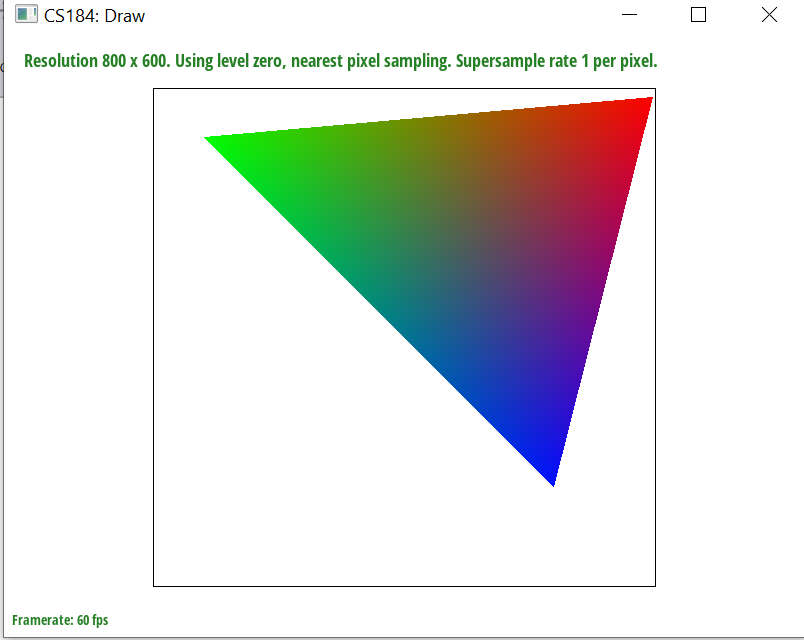

This was a really fun, although very challenging homework. I really enjoyed it.
In this homework, I built a rasterizer which renders svg files in customized ways. During this experience, I was able to render svg files ranging from a dragon to a color wheel, as well as svg designs from texture maps. The most important thing I learnt from this experience was the variables that can alter the status of an image: the sampling rate (points per pixel), level sampling rate(mipmap coefficient), and point sampling rate(nearest vs bilinear). I was also able to play around with barycentric coordinates, and use it to manipulate the color of various bodies. In general, in my implementation for the code, I strive for readability, which is why my code is long. This can be seen through the way I iterate through points in supersampling, using 4 loops.
Here in task 1, this was the fastest task I completed. The process of completion of this task is as follows. My initial thought with this is to first loop through all the points that are somehow within some "bound". In other words, this "bound" will be all the points which can possibly be within the triangle. My goal is to write a script that figures out whether the point that is looped through the bound is within the triangle defined by the 3 parameter points. Here, I used the triangle test formula given in class, the 3 equations for $L(x,y)$, to determine whether a set point is within the triangle or not. There are 3 equations the point needs to satisfy, each of the form: $$(-(dY) (x - x0) + (dX) (y - y0))$$ Where $dX,dY$ are differences between consecutive two x-y coordinates of points in the counterclockwise traversal order.
The way I found the initial bound dimensions was by finding the respective min and max of the x and y-coordinates from the vertex points¡ this in turn creates a sort of rectangular bound of points which is guaranteed to contain the triangle. This was the most intuitive way for me, and it is more efficient than just looping through the frame. This was the basic algorithm. I wasn't able to find a more efficient way unfortunately.
A big bug in this task was that certain triangles don't render for some reason(especially the svg file containing the polygons). It took me some time, but I eventually figured out that it was because of the orientation of the triangles¡ I needed to deal with the fact that orientations can vary, but I didn't and instead foolishly assumed they are all counterclockwise by default. So I wrote a piece of code checking for the slope of lines and then using that to determine clockwise/counterclockwise. If it was clockwise, I flipped two points, and then went as normal. This fixed the bug!
In supersampling, what I did was I first calculated the square root of the sampling rate parameter, which gives the length of the grid that each original pixel is divided into. I call this sidesub as it is the side length of the sub-grid. Then, I created two new loops in my original 2 loops, traversing over each element in the sub-grid(grid inside each original pixel from Task 1).
Super-sampling is useful because it can lead to antialiasing which is very useful in improving image quality, as high resolution images can be sampled better and with more accuracy. Since the Nyquist frequency is half the sampling rate, we see that increasing the sampling rate higher than before allows the image to render more clearly, allowing higher frequencies to show through and therefore a clearer, higher resolution image.
Here we can see comparisons for the respective samples:
This task was very straightforward, like task 1. The bulk of this task was basically filling in the functions transform, scale, and rotate, which is done using the methods (of matrix multiplication) described in class.
I aimed to get the robot to wave and run at the same time, while wearing a nice green polo shirt and brown shorts. In addition, I made the robot's face not square, but rather round. I also made the robot not a red man¡ I colored him of an appropriate color so he looks like me.
Since the robot is waving and running, the right elbow (from robot's perspective) is at a 90 degree angle. The legs and arms are slanted to indicate curvature and that he is running.
After that, I got more creative and tried to make this person a goalie¡ however the circle never appeared on screen, so I had to abandon that idea.
Barycentric coordinates are ways to express points (within) a line, triangle, quadrilateral, or any convex polygon using the vertices and edges of the lines or polygon, not with global coordinates. It is designed such that every unique (each coordinate is nonnegative) coordinate has a bijection with every point within the convex polygon.
Barycentric coordinates are useful as they express each point in the triangle using the edges and vertices, where each coordinate demonstrates the ratio of the distance between the point in question and each vertex. The number of coordinates depends on the number of vertices the polygon / line has, as each coordinate corresponds to the (relative) distance from a certain vertex or edge. This makes it useful in the sense of transforming shapes and color schemes across different bodies. As an example, replicating one color scheme from one arbitrary triangle to another is very difficult with regular coordinates, but incredibly easy with barycentric coordinates.
Here is an example of a color triangle, where each vertex is a different color, and each vertex in the triangle is colored by its barycentric coordinates, each coordinate being the relative weight of the color of the corresponding vertex.
Here is the screenshot of the test7.svg file with default viewing parameters and sample rate 1.
From my understanding, pixel sampling is using pixels from the sampling of the image, and using barycentric coordinates of the pixel image to sample / find the corresponding coordinates of the point in the texture mapping. Using those coordinates, we can then find the appropriate color in the texture mapping. There are two ways this can be done: 1) Nearest: the nearest sampling method essentially finds the closest colored texture coordinate to the coordinate we give it. These texture coordinates are the vertices with integer coordinates. In essence, we are finding the closest integer coordinate to the passed in coordinate and returning that color 2) Bilinear: this finds the color by linear interpolation with respect to each dimension of the texture coordinate, with respect to the color of the closest 4 coloured coordinates. Here are the images:

For bilinear sampling, we see it results in a much smoother transition of colors in border regions, leading to a smoother gradient compared with nearest sampling. We see that there will generally be a large difference between bilinear vs nearest sampling when there is a great difference between the colors at / along a certain line. Bilinear sampling tends to be smoother when the colors start changing.
Level sampling is the notion of sampling from different mipmap level versions of the same image, so as to prevent aliasing which can occur for low sampling frequencies. Now, there are three parameters that can be altered in the rasterization of an image file: pixel sampling, level sampling, or the number of samples per pixel. Pixel sampling (bilinear) allows more smoothness at edges, but takes more memory and is marginally slower than nearest sampling. Level sampling (increasing the level) increases the antialiasing power, as it is more likely for the sampling frequency to be above Nyquist, but it decreases image quality. The number of samples per pixel (increasing it) also increases antialiasing power for similar reasons, and also produces a better quality image, but increases memory greatly.
Here are the image results.